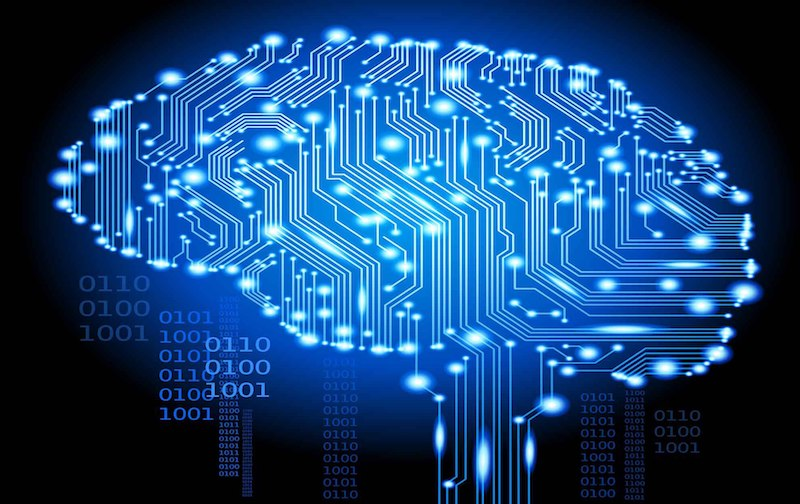
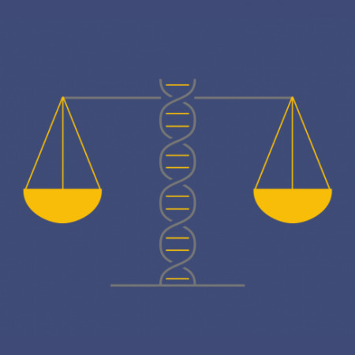

Proyecto final sobre la relacion de la bioetica y informatica

La bioética y la informática son dos campos que se han vuelto cada vez más interconectados en la era moderna. Con el avance de la tecnología y la informática, la capacidad de los profesionales de la salud para recopilar, analizar y utilizar datos ha aumentado significativamente. Sin embargo, esto también ha planteado una serie de preguntas éticas y morales en torno a cómo se utilizan estos datos, especialmente en el contexto de la atención médica y la investigación científica.La bioética se enfoca en la ética y los valores relacionados con la atención médica y la investigación biomédica, mientras que la informática se enfoca en la gestión y el procesamiento de información. Cuando estos dos campos se cruzan, se plantean preguntas éticas y morales sobre cómo se recopilan, almacenan, procesan y utilizan los datos en la investigación y la práctica médica. El propósito de este proyecto es explorar la relación entre la bioética y la informática, analizando los desafíos éticos y las oportunidades que se presentan cuando se combinan estos dos campos.
La informática es una disciplina que se encarga del estudio de la computación y de todo lo relacionado con el procesamiento de la información y la comunicación mediante el uso de herramientas tecnológicas como la computadora, el software y los sistemas de redes. La informática se divide en diferentes áreas de estudio, como la programación, la ingeniería de software, la inteligencia artificial, las bases de datos, la seguridad informática, entre otras. Estas áreas se enfocan en desarrollar soluciones tecnológicas para diversas necesidades y problemáticas en diferentes campos, desde el sector empresarial hasta la educación, la medicina y el entretenimiento.
En resumen, la informática es una disciplina esencial en la sociedad actual, ya que permite la creación de herramientas tecnológicas que facilitan y mejoran la comunicación, el procesamiento y la organización de la información en diferentes ámbitos de la vida cotidiana y empresarial.

La bioética es una disciplina que se encarga de analizar y evaluar los dilemas éticos y morales que surgen en el campo de la biología, la medicina y la investigación científica.
La bioética se ocupa de cuestiones como el inicio y fin de la vida, el consentimiento informado del paciente, el uso de tecnologías médicas avanzadas, la eutanasia, la clonación, la experimentación con animales, entre otros temas. Estudia tanto los aspectos éticos como los aspectos jurídicos y sociales de estos temas, y busca promover el diálogo y la reflexión crítica entre los distintos actores involucrados.
La bioética es una disciplina interdisciplinaria que combina la filosofía, la ética, la medicina, la biología, la sociología y otras disciplinas relevantes. Busca establecer principios éticos que guíen la toma de decisiones en el campo de la biología y la medicina, y promueve el respeto por la dignidad humana y la autonomía del paciente.
En resumen, la bioética es una disciplina fundamental en la sociedad actual, ya que busca establecer un marco ético para el avance de la ciencia y la tecnología en el campo de la biología y la medicina, y promover la toma de decisiones justas y responsables en situaciones que pueden afectar la vida y la salud de las personas.

La bioética y la informática están estrechamente relacionadas en el ámbito de la tecnología médica y la investigación científica. La informática juega un papel fundamental en la investigación, el diagnóstico y el tratamiento médico moderno, y por lo tanto, tiene implicaciones importantes en la ética y la moral de la práctica médica. La informática puede ser utilizada para recopilar, almacenar y analizar grandes cantidades de datos médicos, lo que permite a los investigadores y médicos tomar decisiones más precisas e informadas. Sin embargo, esto también plantea cuestiones éticas y de privacidad sobre cómo se recopilan, almacenan y utilizan estos datos.
Además, la informática también se utiliza en el campo de la biotecnología y la genética, donde se han desarrollado tecnologías como la edición de genes y la clonación, que plantean importantes cuestiones éticas y morales sobre la manipulación genética y la creación de vida artificial En este contexto, la bioética se encarga de analizar y evaluar estas cuestiones éticas y morales, y proporciona un marco de referencia para abordar estos temas en la práctica médica y la investigación científica. La bioética y la informática se entrelazan para abordar estas cuestiones, con la bioética proporcionando un marco ético para la toma de decisiones en la práctica médica y la informática proporcionando herramientas y tecnologías para hacer posible la investigación médica y la innovación tecnológica.
Da tu opinion
Datos del autor
Nombre: Rhonny Dahel Leon Matias
Matricula: 100653599